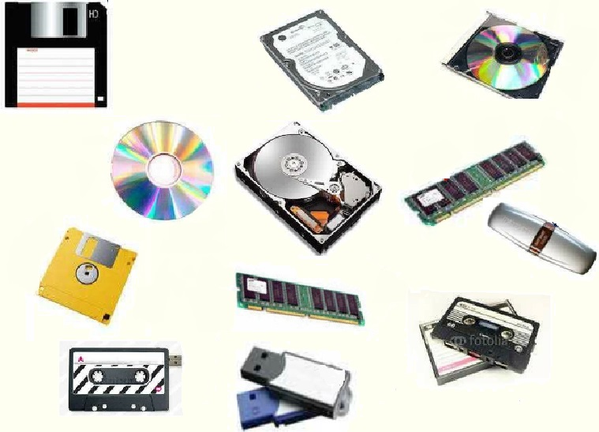

Главная страница
Доброго времени суток, дорогие пользователи.
Приветствуем вас на нашем сайте, где вы сможете найти информацию по обширной и интересной теме: память компьютера. Как мы все, а может быть и не все, знаем, существует несколько разновидностей памяти — внешняя и внутренняя. С каждой из них вы можете ознакомиться в соответствующих разделах нашего сайта. В данный момент вы находитесь на главной странице. Если вдруг найдете какую-то ошибку, то опишите проблему в разделе "Сообщить о проблеме".
Разберемся, что же такое компьютерная память.
Компьютерная память (устройство хранения информации, запоминающее устройство) — часть вычислительной машины, физическое устройство или среда для хранения данных, используемая в вычислениях в течение определённого времени. Память, как и центральный процессор, является неизменной частью компьютера с 1940-х годов. Джон фон Нейман придумал размещать внутри компьютера независимую структуру, где хранились бы все необходимые данные.
Память в вычислительных устройствах имеет иерархическую структуру и обычно предполагает использование нескольких запоминающих устройств, имеющих различные характеристики.
Задачей компьютерной памяти является хранение в своих ячейках состояния внешнего воздействия, запись информации. Эти ячейки могут фиксировать самые разнообразные физические действия. Они функционально аналогичны обычному электромеханическому переключателю, и информация в них записывается в виде двух чётко различимых состояний — 0 и 1 («выключено»/«включено»). Специальные механизмы обеспечивают доступ (считывание, произвольное или последовательное) к состоянию этих ячеек.
Процесс доступа к памяти разбит на разделённые во времени процессы — операцию записи (сленг. прошивка, в случае записи ПЗУ) и операцию чтения, во многих случаях эти операции происходят под управлением отдельного специализированного устройства — контроллера памяти.
Также различают операцию стирания памяти — занесение (запись) в ячейки памяти одинаковых значений.
Наиболее известные запоминающие устройства, используемые в персональных компьютерах: модули оперативной памяти (ОЗУ), жесткие диски (винчестеры), дискеты (гибкие магнитные диски), СD- или DVD-диски, а также устройства флеш-памяти. Более подробно о них читайте в соответствующих разделах.
Мы рады, что Вы посетили наш сайт.